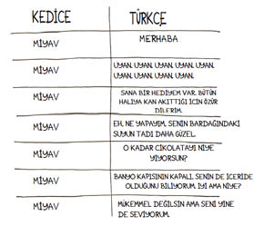
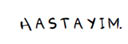
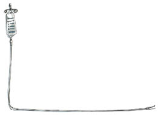

10
Bu arada Tibby’nin kız kardeşi Fibby bizimle her zaman konuşuyordu. İşte size miyavlamalarının tahmini bir tercümesi:

Yine de duymam gereken en önemli haberi kaçırdım.

Bir gün önce Fibby’nin rahatsız bir hali vardı. Ama onu okşadığımızda mırladı, verdiklerimizi yedi ve kedicik gözlerini kırpıştırdı. Her şey yolunda, dedim Wendy’ye. Hafta sonu için planlar yaptık.
Güzel, güneşli bir öğleden sonraydı. Keyfini sürmek için evden çıktık.Kısa bir gezinti! Wendy haklıydı, daha iyiydim.
O akşam eve döndüğümüzde, Fibby’yi hiçbir yerde bulamadık.
“Fibby?” diye seslendi Wendy. “Fibby?”
Kedicik patilerinin sesine kulak kabarttık.
Sessizlik.
Koltuk değneklerime dayanarak merdivenleri çıktım. Fibby yatağın en sevdiği noktasında değildi. Halının en sevdiği noktasında değildi. En sevdiği sandalyenin üstünde de yoktu. Onun yerine Tibby’yi buldum, çalışma odasının ortasında oturuyordu. Bakışlarındaki bir şey midemin büzülmesine sebep oldu.
“Fibby, Fibby,” diye seslenmeye başladım, başlangıçta sakindim ama sesime gitgide artan bir telaş eklendi. Banyo paspasının üstünde bir idrar gölcüğü vardı.
Fibby’yi sonunda dolaplardan birinin arkasında bulduk. Önce başı, sonra da iki ön bacağı göründü; biraz ortaya çıktı, sonra yere yığıldı.
Koltuk değneklerimi bırakıp dizlerimin üstüne çökerek, “Hayır, olamaz,” dedim. “Hayır, hayır, hayır.”
Fibby’yi karnımın üstüne çektim; kedim dengesini bulamadan sallandı.
“Fibby!” diye haykırdım odaklarını kaybetmiş gözlerine. “Fibby!”
Wendy sendeleyerek veterineri aramaya gitti.
Arabaya atlayıp geceleri açık olan acile gittik. Çok Hasta tabelasının arkasında saatlerce beklemeye hazırlanmıştım, ama hekimin asistanı kedi taşıma kutusuna bir göz attı, kaşlarını çattı ve kutuyu çabucak arka odaya taşıdı. Kısa bir süre sonra veteriner dışarı çıktı, asistanı da peşindeydi.
“Karında büyük bir kitle” sözlerini duydum. “Çok ama çok hasta,” dediklerini işittim. Bizi bir muayene odasına soktular. Sanki tehlikeliymişiz gibi alçak sesle konuşuyorlardı.
Wendy’ye, “Anlamıyorum,” deyip duruyordum. Fibby’nin karnında bir tümör benden habersiz nasıl büyürdü ki? Bu kadar önemli ve bu kadar kötü bir şeyi nasıl gözden kaçırmıştım?
Veteriner, “Çok kanaması var,” dedikten sonra seçenekleri sıraladı. Hiçbiri olumlu değildi. Keskin nişancıların nerelere yerleştirileceği talimatını veren bir Gizli Servis ajanı gibi, alçak sesle ağır ağır konuşuyordu. Ses tonu, keskin nişancıların kötü ama gerekli olduğunu söylüyordu. Ağlıyor olmama tepki göstermedi. “Üstelik bütün bunlar işe yaramayabilir de,” dedi.
Yüzüme bastırdığım kağıt mendilin altından, “Acı çekmesini istemiyorum,” dedim. “Sizin kediniz olsa ne yapardınız?”
Aslında, “Aj çikmiziniztimyim. Sizzzn kidnzlsa neypırdnzz?” dedim, ama veterinerler ömür törpüsü hıçkırıkları anadile tercüme etme konusunda tecrübelidir.

“Uyuturdum,” dedi.
Uyutmak mı? Yanlış duymuştum mutlaka. Bebeği uyutursunuz, hoşlanmadığınız birini uyutup ondan kurtulursunuz ama onlar uyandırılabilir. Fibby uyutulursa sonsuza kadar gidecekti.
Fibby kafesinde gevşek bir şekilde yatıyordu. Gözbebekleri büyümüştü. Aldığı her nefesle inliyordu. Sevgi sözleri söyledik, fısıldadık, hafif dokunuşlarla yüzünü okşadık. Uyutmak mı? Barınaktan dün gelmiş gibiydi. Daha dün, avucuma sığabilecek bir tüy yumağıyla kulaklardan ibaretti.
Ne yapmam gerektiğini söyle bana mesajını ona iletmeye çalıştım. Fibby ne yapmak istiyorsa, onun için en iyisi neyse onu yapmak istiyordum. İnsanlar açısından bu ikisi farklı şeylerdir, ama hayvanlarda genellikle aynı kapıya çıkarlar.
Fibby’nin inlemeleri sürdü. Başımı ellerimin arasına aldım, derin derin içimi çektim.
“Uyutun,” dedim.
Wendy, Fibby’yi küçük bir odaya taşıdı. Işıkları söndürdüm. Wendy onu dikkatle kollarımın arasına bıraktı. Öyle hafifti ki. Nasıl bu kadar hafiflemişti?
Veteriner fincanıma kahve koyuyormuş gibi, “Bana ne zaman olacağını söylersiniz,” dedi. Ağlıyor, öne arkaya sallanıyordum, göğsüme bastırdığım kediciğe sımsıkı sarılmıştım. Daha fazla zaman istiyordum, ama belli ki Fibby çok acı çekiyordu.
Ne zaman? Başımı tavana doğru kaldırıp, “Asla!” diye haykırmak istiyordum.
Onun yerine, “Şimdi,” dedim.
Fibby hemen öldü. İlaçlar o kadar etkili ki.
Wendy, “O gitti,” dedi; Fibby’nin gevşek vücudunu kollarımdan aldı.
Şaşkın şaşkın, “Nereye?” diye sordum. “Nereye gitti?”
Daha iki gün önce, kafasıyla Wendy’nin kolunu dürterek ilgi istemişti. Bir gün önce çenesini gıdıkladığımda, tıraş olan yaşlı bir adam gibi yüzünü buruşturmuştu. Bir önceki gece tonbalığı ziyafeti çekmişti.
Bir dakika. Tasmasına kamerayı ve GPS cihazını takabiliriz.
Bir dakika. Lütfen durun.
Ama Fibby gitmişti ve takip edemezdik.